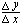

After you have collected data for the amount of oxygen consumed over time by germinating and nongerminating peas at two different temperatures, you can compare the rates of respiration. Let's review how to calculate rate.
Rate = slope of the line, or 
In this case, y is the change in volume, and x is the change in time (10 min).
| What would be the rate of oxygen consumption if the respirometer readings were as shown here? |
 Continue to Lab Quiz.
Continue to Lab Quiz.